黎曼运动律（Riemannian Motion Policy）
Understanding the Geometry of Workspace Obstacles in Motion Optimization（ICRA 2015）
研究问题
绕障为什么困难
Cartesian motion is easy only because the pseudoinverse, our powerhouse tool, correctly represents how Euclidean workspace geometry pulls back into the configuration space.
Importantly, this metric at a given point x operates on the tangent space\(\|\dot{x}\|_{A(x)}=\sqrt{\dot{x}^TA(x)\dot{x}}\)
CHOMP：These quick Hessian approximations leverage the graph structure of the motion problem to communicate gradient information across the full length of the trajectory at each iteration during approximate Newton step computations.
研究方法
- partial Gauss-Newton approximation的合理性：In the partial Gauss-Newton approximation,8 we simply throw away the second term, which accounts for additional curvature arising from the differentiable map φ, itself, and keep only that first, computationally simpler and better conditioned, term. That first term is the Pullback of the codomain’s Hessian; it, alone, communicates the entirety of the first-order task space Riemannian geometry back to the differentiable map’s domain. Experimentally, this term contributes enough information about the function’s curvature to promote fast convergence in optimization. Importantly, Theorem 1 of the extended version of this paper [17] shows that the portion of the Hessian not captured by these partial Gauss-Newton approximations (the Pullbacks) vanishes quickly as the time-discretization becomes increasingly fine.
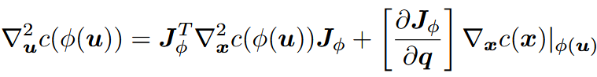
- 绕障之所以困难是因为没有在正确的几何空间中进行规划（没有找到合适的度量），笛卡尔空间的直线运动实现其实是通过将笛卡尔空间中的几何度量正确拉回到了构型空间中得到的。从工作空间出发，选择k个任务空间，对应k个映射\(\phi_i(x)\)，外加工作空间自身，共k+1个空间，同时对于每个任务空间定义权重\(\alpha_i\)，由此得到总的映射函数
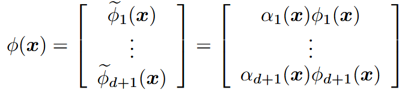
由这个映射可以通过partial Gauss-Newton approximation计算工作空间中的拉回度量
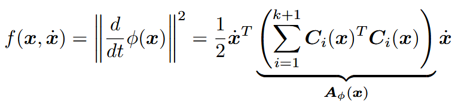
在此度量基础上生成运动（与测地线近似），注意这里是一个全局运动规划算法，测地线的求解可以视为以下优化问题
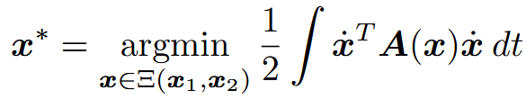
研究缺陷
权重仍采用专家设置
任务空间中的度量默认为单位矩阵，这也就要求合适的映射函数，实现任务空间中的两点之间的最短连线是直线
On the Fundamental Importance of Gauss-Newton in Motion Optimization（Arxiv 2016）
研究问题
在机器人运动优化中， Hessian 矩阵的计算复杂度高，尤其是涉及运动学映射或惯性矩阵时。传统方法如高斯 - 牛顿近似（Gauss-Newton Approximation）虽被广泛使用，但缺乏理论支持，不清楚其近似误差对优化性能的影响程度。具体而言，需解决以下问题：
高斯 - 牛顿近似在理论上的合理性如何？其与真实 Hessian 的差异随时间离散化的变化规律是什么？
如何利用该近似设计高效的曲率计算方法，尤其是针对传统计算复杂的目标函数（如刚体动能）？
Real-time Perception meets Reactive Motion Generation（Arxiv 2017）
研究问题
机器人在动态环境中进行抓取和操作时，面临着由噪声感知、不准确模型以及难以预测的环境动态等因素带来的不确定性挑战。具体问题如下：
感知与运动的整合难题：对于需要控制多个自由度并与环境进行物理交互的机器人系统，如何将实时感知与运动生成进行最佳整合，以实现对不确定性的反应式行为，这仍是一个未解决的问题。
不同系统架构的性能差异：传统的 “感知 - 规划 - 执行”（SPA）方法在静态环境中表现良好，但在动态环境中，由于缺乏实时反馈，其鲁棒性较差。而仅依赖局部反馈控制的系统虽然反应迅速，但容易陷入局部极小值，尤其在复杂几何环境中表现不佳。
动态环境下的适应性需求：在人机协作、家庭环境或救灾等场景中，目标物体和环境往往是动态变化的，这就要求机器人系统能够实时感知环境变化，并快速生成相应的运动策略。
研究方法
本文通过对比三种典型的系统架构，定量评估实时感知反馈与反应式运动生成在不同时间尺度下的整合效果，旨在为高自由度机器人系统的设计提供实证依据。具体思路如下：
- 架构对比与统一组件：设计三种系统架构，分别为 “感知 - 规划 - 执行”（SPA）、“局部反应控制”（LRC）和 “反应式规划”（RP）。
感知 - 规划 - 执行（SPA）
方法：仅在运动开始时获取一次深度图像，以此估计物体位姿并构建工作空间几何模型，然后生成一次性运动规划，在执行过程中不接受进一步的视觉反馈。
特点：适用于结构明确的静态环境，但在动态环境中无法应对变化。
局部反应控制（LRC）
方法：持续处理深度图像，实时更新物体位姿、机器人臂配置和世界模型。通过局部控制器（如目标控制器、避障控制器）在 1kHz 的高频下直接生成控制指令，对局部环境变化做出即时反应。
特点：反应速度快，能有效避免碰撞，但在复杂几何环境中可能陷入局部极小值。
反应式规划（RP）
方法：结合局部反应控制和全局运动优化。在 1kHz 频率下进行局部反应控制的同时，以 5-10Hz 的较低频率运行连续运动优化器（基于黎曼运动优化 RieMO），生成线性二次调节器（LQR）策略，实现对全局路径的重新规划。
特点：兼具实时反应能力和全局规划能力，能够在动态环境中找到无碰撞路径。
为了便于定量评估，三种架构采用相同的实时感知和反应式运动生成组件，仅在感知信息处理频率和运动优化时间范围上有所不同。
(i) Incorporating real-time feedback on different time-scales is crucial to achieve safe and successful task execution in uncertain, dynamically changing environments, (ii) the availability of reactive motion generation relaxes the requirement for perception systems to achieve maximum, one-shot accuracy since new, updated information can be consumed immediately.
With local, we indicate that they only take the local geometry of the environment around the current manipulator pose into account to compute the optimal, immediately next control command.
研究缺陷
然而，我们的系统将受益于同时考虑触觉传感器阵列或力/力矩传感器的触觉反馈[ 15 ]。
目前，我们正在对避障运动进行优化。然而，在操纵过程中利用接触约束已被证明可以提高鲁棒性[ 30 ]，[ 16 ]，[ 7 ]。
我们的系统还不依赖于任何学习。然而，在例如学习感知数据的表示，而不是自己规定它方面有很大的潜力。另一个有趣的研究方向是集成在线逆动力学学习，以应对拾取物体后变化的动力学
Riemannian Motion Policies（Arxiv 2018）
研究问题
机器人运动生成的复杂性与碎片化
现有机器人运动生成方法（如全局规划、局部反应控制、运动优化）彼此割裂，缺乏统一框架，导致多策略融合时出现几何不一致性（如策略冲突、变换失真）和计算效率低下（如集中式优化难以实时响应）。
计算复杂度高：Clearly, theres a gap between the computational complexity of these tools and the seeming simplicity with which humans solve many of these tasks. Humans are innately reactive in their movements, solving and adapting these motion problems extremely fast.
任务冲突：We show that to optimally combine multiple policies we need to be careful about tracking how their local geometry (the directions of importance to the policy) transforms between spaces (such as when transformed from the end-effector space back to the configuration space) and how those local geometries contribute to their combination into a single policy.
传统方法的局限性
the motion representations of Billard [13] or Dynamic Movement Primitives (DMPs) [9]. Those latter frameworks represent motion as second-order differential equations as we do here, but they do not address concretely how to combine multiple policies defined across many task spaces.
Operational space control, on the other hand, addresses how to combine multiple policies, but it does not address the problem of shaping the behavior of the policies
Existing approaches often include a weight matrix on each task space term but usually do not justify the metric; in practice it is common to use naive metrics tailored to just one or two obstacles or tuned to perform only within specific environments.
叠加策略的缺陷：简单叠加多个局部策略（如障碍避障与目标跟踪）会导致振荡、速度下降或策略冲突，缺乏对空间几何方向的考量。
空间变换的不足：任务空间与配置空间之间的策略转换依赖伪逆等工具，无法保证几何一致性，影响系统稳定性和最优性。
the framework of optimization alone does not provide us with useful tools for decomposing the problem across task spaces for behavioral design and reuse, or for distributing the computation across multiple processes or devices. For instance, as described above, optimal control can be computationally intensive and should be separated in practice from local reactive control as is done in [12]. RMPs provides a natural framework and toolset for decomposing the problem such that the final result is optimal when combined.
In reality, control systems are often capable of controlling the position of the robot with high precision using highgain PID controllers. Therefore, reactions and compliance can often be implemented directly as modifications to the position signals. However, when contact with the environment is important, force and/or torque control can be integrated. The framework presented in this paper is sufficiently general to handle all these cases.
研究方法
- 核心框架：黎曼运动策略（RMP）
But rather than using pseudoinverses we define geometrically consistent pullback operations, and rather than simply adding together the policies we perform metric-weighted averages of multiple policies which account for each policy’s local geometry.
定义与结构
将运动策略建模为 ** 二阶动力系统（加速度场 f）与黎曼度量（矩阵 A）** 的组合 (f,A)，其中度量 A 刻画策略关注的空间方向（如目标方向、障碍法线方向）。
关键操作：
- 拉回（Pullback）：将任务空间策略转换为配置空间策略，通过雅可比矩阵与度量变换实现几何一致性。
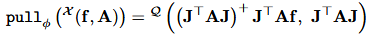
- 前推（Pushforward）：反向变换（如配置空间到任务空间）。
- 度量加权平均：组合多个策略时，以度量矩阵求和为权重计算最优加速度，确保线性性与最优性。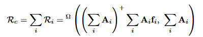
- 策略融合与应用
模块化策略设计
局部反应策略：包括目标吸引（姿态可以转化为位置吸引）、障碍排斥（每个障碍物建立一个排斥函数）、冗余控制（设置默认关节位姿）等，每个策略附带方向敏感的度量（如障碍方向的拉伸矩阵）。
RMP 框架通过将方向约束转化为目标吸引问题，实现了对任意轴的灵活控制：
(1) 单轴方向约束
方法：在目标轴上定义一个单位向量的端点作为 “虚拟目标点”，然后使用目标控制器（Target Controller）将该点吸引至期望位置。
- 例如：若需约束机械臂末端绕 x 轴的方向，可在末端坐标系的 x 轴上取单位向量端点 p=[1,0,0]T，并设定其期望位置为 pgoal=[a,0,0]T（a 为期望的 x 轴方向参数）。
数学实现：
目标控制器的加速度场为：fg(p,p˙)=α⋅s(pgoal−p)−β⋅p˙
其中 s(⋅) 是软归一化函数，避免分母为零；α,β 为比例和阻尼增益。效果：通过控制该点的位置，间接约束机械臂在该轴上的方向（例如，保持 x 轴指向特定方向）。
长程导航：通过 “收缩 - 伸展” 启发式策略（Retract Heuristics），结合逆运动学近似，在无全局规划时实现障碍绕行：in practice, we often do generate rough IK approximations which we call guiding configurations and use points along the arm of the approximate IK solution as guiding points. We have found this simple heuristic to work extremely well for a wide range of practical problems. More global behaviors such as the effective choice of homotopy class (e.g., left vs. right around an obstacle) can be handled in a similar manner.
与其他规划器集成：将模型预测控制（MPC）等优化结果线性化为 RMP 流，与高速反应层分离，通过异步通信实现实时控制，添加预测能力：In practice, evaluating fopt is expensive (requiring an optimization over a finite-horizon trajectory), and even with warm starts can only be evaluated at a low rates (e.g., 10-20 times a second) for reasonably sophisticated problems. Therefore, we use the typical optimal control technique of calculating linearizations of the problem, which can be re-evaluated at a much faster rate. This results in a time-varying sequence of linear RMPs that are communicated to the local controllers and combined using the RMP framework.
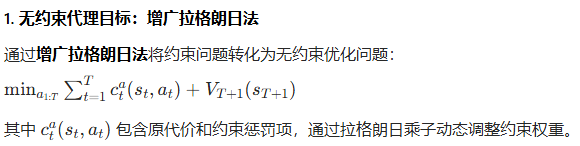
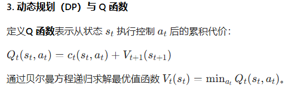
由最优函数得到最优策略$\pi_t^*(s_t)$，再由代价函数得到度量矩阵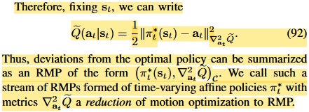
- 将构型空间映射到其他空间中，从而取消关节边界约束：We can handle joint limits by defining a mapping between the constrained joint limit space and an unconstrained space using the sigmoid function\. The intuition is that we pull the final combined joint limit constrained RMP into an unconstrained space by pulling it through a nonlinear sigmoidal map that maps the entire real line to the joint limit interval\. This unconstrained space is convenient since simple affine policies \(such as positional attractors\) manifest as highly nonlinear policies in the original space after being transformed through the sigmoid\.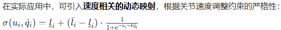
研究缺陷
度量设计的依赖性
- 黎曼度量的选择（如障碍方向拉伸、权重函数）依赖经验调参，缺乏通用的自动化设计方法，尤其在高维或复杂场景中可能难以手工优化。
计算复杂度与实时性瓶颈
- 尽管框架支持分层计算，但大规模策略组合（如数百个控制器）的在线度量加权平均仍需高效矩阵运算，可能对嵌入式硬件的实时性构成挑战。
全局规划能力的局限性
- 长程导航依赖启发式策略（如收缩 - 伸展），在极端复杂环境（如无明显 “肘部自由” 空间）中可能失效，仍需结合全局规划算法（如 RRT*）提升完备性。
多模态传感器融合的不足
- 论文主要验证视觉反馈下的反应控制，未深入探索触觉、力反馈等多模态传感器在 RMP 框架中的集成与策略设计。
理论扩展的潜在限制
- 目前框架主要针对连续状态空间的二阶动力系统，对离散动作空间或强化学习策略的融合支持不足，需进一步扩展。
- 2015年提出的RieMo全局运动规划的结果与RMP设计的局部运动规划结果是否一致？
Neural Autonomous Navigation with Riemannian Motion Policy（Arxiv 2019）
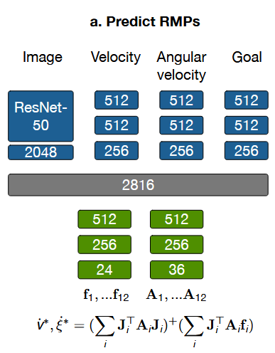
- 网络生成f，A
Optimization Fabrics（Arxiv 2020）
enabling designers to define a tree-network of relevant task spaces, and to design position and velocity dependent acceleration policies in those spaces along with smoothly varying position and velocity dependent priority matrices that define how the policies should combine with one another.
RMP：their power depends largely on the ability of practitioners to most effectively leverage their intuition in the design process
RMPs in the broadest sense lack formal stability guarantees, which can lead to potentially dangerous usage
Geometric Dynamical Systems：
two metrics are required: one that directly originates from the GDS and is used to shape the acceleration behavior of the system and another one to define its priority in combination with other GDS policies.
each subtask policy had to be designed as a potential function which can introduce settings where tasks conflict with one another. The experiments in [1] circumvent some of these issues by introducing high-gain forces and dampers to reduce the effect of the curvature terms introduced by the metrics. However, a recent analysis of Finsler and Riemannian geometry [12] revealed that these terms play a signficant role in shaping the second-order behavior of the system.
Modern collaborative systems build this real-time processing into the design relying on an underlying layer of reactive control to interpret and adapt the plans computed by the more computationally intensive planning layer
operational space control：metrics (priority matrices) with position dependence only
GDS：introduces velocity dependence to their metrics
Lagrangian systems：do not require the notion of structured GDS as was done in the earlier [1] work
Finsler geometry：provide much guidance on how to design systems. generalizing many of Riemannian geometry’s most useful properties
Beyond behavioral modeling, this research reveals that the energies associated with these systems can also represent Lyapunov functions [7], yielding a broader class called conservative systems.
DMP：DMPs, however, inherit their stability guarantees by reducing over time to linear systems as the nonlinear components vanish by design.
A fabric defines a nominal behavior that a forcing potential will push away from. When damped and forced, a fabric is unbiased in the sense that the resulting system will optimize the potential. For instance, the unforced classical mechanical system will remain at rest if it starts at rest; there is no biasing force that will explicitly push it from that state.
RMP2: A Structured Composable Policy Class for Robot Learning（RSS 2021）
Geometric Fabrics: Generalizing Classical Mechanics to Capture the Physics of Behavior（RAL 2022）
研究问题
Recent work on Riemannian Motion Policies (RMPs) has shown that shedding these restrictions results in powerful design tools, but at the expense of theoretical stability guarantees.
Second-order systems are natural for control since robots, themselves, are second-order systems (see [10] for similar arguments), so we restrict our attention here to those.
Note that the second and third limitations are largely the motivation for hierarchical task prioritization [18]—when multiple potentials may conflict or priority metrics are compromised, designers preserve task fidelity by instituting a task hierarchy whereby lower-priority tasks are projected into the null-space of higher-priority tasks [17, 2]. However, these task hierarchies are often pragmatic solutions to these fundamental problems and somewhat artificial in practice. For instance, the relative priorities of reaching targets and avoiding obstacles should adjust continuously; it is unclear which is globally higher priority.
研究方法
- 经典动力学系统的设计通过设计拉格朗日量来同时确定权重和行为，Fabric通过bending操作，可以实现二者设计的解耦，通过拉格朗日量设计确定权重，再通过bending实现想要的行为
Task Adaptation in Industrial Human-Robot Interaction: Leveraging Riemannian Motion Policies（RSS 2024）
Geometric Fabrics: a Safe Guiding Medium for Policy Learning（ICRA 2024）
研究问题
- However, reinforcement learning does come with challenges like reward engineering, optimization efficacy, and resulting policies are often not safe for real-world deployment. Despite action regularization, RL policies still tend to bang-bang actions which are damaging to actuator drives of robots. To combat these destructive action signals, low-pass filters are often applied to reject high-frequency content in the actions [8], [12], [6], [7], [9], but this still does not handle motor constraints explicitly, can result in sluggish policy behavior, and still admit high-frequency content in actions.